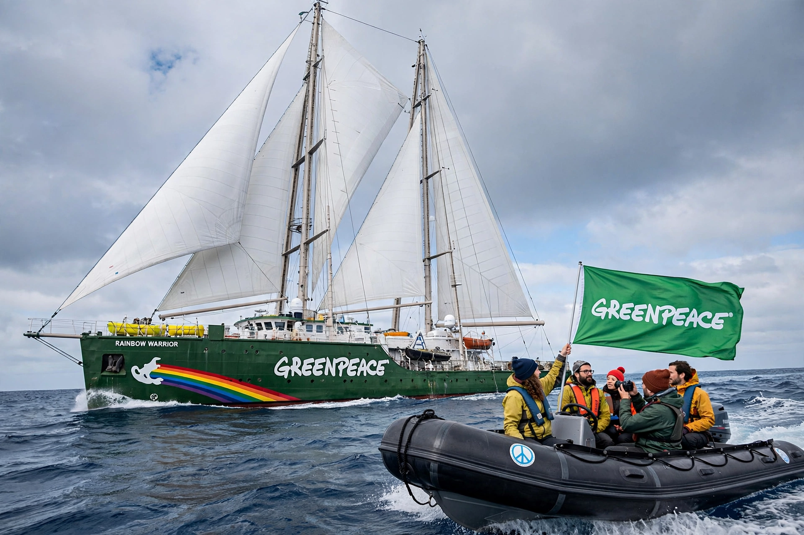

Greenpeace

Greenpeace is an independent global environmental campaigning network founded in 1971 in Vancouver, Canada. It is known for nonviolent direct action — activists in inflatable boats placing themselves between harpooners and whales, climbers unfurling banners on landmarks — designed to 'bear witness' and force environmental abuses into public view. See Environmentalism.
Greenpeace offices operate in dozens of countries under Greenpeace International, based in Amsterdam; the network accepts no money from governments or corporations, funding itself from individual supporters.
Origins and famous campaigns
The organisation began as the Don't Make a Wave Committee, which in 1971 sailed a small boat toward the US nuclear test site at Amchitka, Alaska. The test proceeded, but the voyage sparked the movement; the name Greenpeace was adopted the following year. Early campaigns opposed French nuclear testing at Moruroa in the Pacific.
In July 1985 French secret service agents bombed Greenpeace's ship Rainbow Warrior in Auckland harbour, New Zealand, killing photographer Fernando Pereira, as the ship prepared to protest at Moruroa. The scandal badly damaged France; the ship's name was carried by successors.
Work and criticism
Greenpeace campaigns on climate and energy, forests, oceans, toxics and sustainable agriculture, combining direct action with research, lobbying and litigation. It played visible roles in achieving the Antarctic mining ban, the commercial whaling moratorium's defence, and moratoria on deep-sea bottom trawling in some regions.
Critics, including some scientists, have faulted campaigns such as the long opposition to Golden Rice and to nuclear power generally; supporters reply that precaution and protest are the point of an organisation built to confront, not to govern.
See also: Environmentalism · Environmental protection · Conservation movement · Climate change · Whale